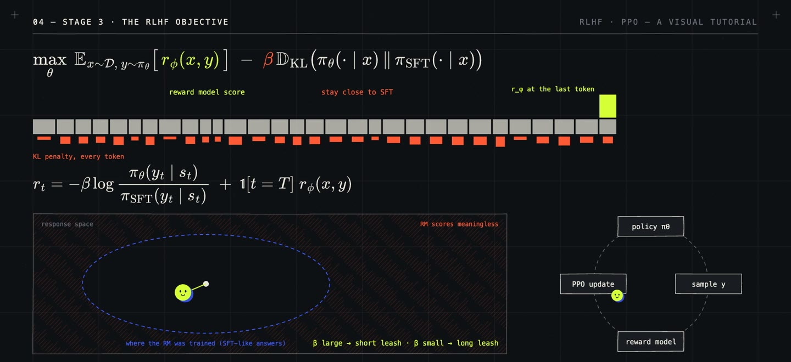

/ 8:20 VIDEO · 4 MIN READ
RLHF and PPO:
how the first assistants were built.
In 2017, Christiano et al. taught a simulated robot to do a backflip without writing a function that recognized one. A person watched pairs of short clips and selected the better attempt, about 900 times. A model learned a reward from those judgments, and reinforcement learning optimized it. The human supplied a preference; the system had to turn that preference into a behavior.
This addressed an old difficulty in specifying what we want. We can often recognize a better result without being able to describe all the rules that make it better. The same asymmetry applies to writing: comparing two summaries is easier than defining a complete measure of summary quality. OpenAI used reinforcement learning from human feedback, RLHF, to summarize text in 2020, then to train InstructGPT in 2022. ChatGPT, released that November, used the same broad recipe.
RLHF helped turn models trained to continue text into models trained to respond as assistants. The remaining problem was how to optimize a learned judgment without confusing a high predicted score with what people actually preferred.
From comparisons to a training objective
The recipe has three stages. Supervised fine-tuning on human-written answers first teaches the response format, producing \(\pi_{\text{SFT}}\). A reward model \(r_\phi\) then learns from comparisons between a preferred answer \(y_w\) and a rejected one \(y_l\). With the Bradley–Terry model,
\[P(y_w \succ y_l \mid x) = \sigma\big(r_\phi(x, y_w) - r_\phi(x, y_l)\big),\]
where \(\sigma\) is the logistic function. The comparisons constrain differences between scores, rather than supplying an absolute measure of quality.
Finally, the policy \(\pi_\theta\) is trained to maximize the predicted reward while paying for departure from the supervised model:
\[\max_\theta\; \mathbb{E}_{x,\; y \sim \pi_\theta}\big[r_\phi(x, y)\big] \;-\; \beta\, \mathrm{KL}\big(\pi_\theta(\cdot \mid x)\,\|\,\pi_{\text{SFT}}(\cdot \mid x)\big).\]
The Kullback–Leibler penalty is part of what makes the learned reward usable. The evaluator saw answers from a particular distribution; as the policy moves away, its scores become less trustworthy. \(\beta\) controls how much departure the objective tolerates. It does not certify that the reward model remains correct.

The optimizer, and what can replace it
Proximal Policy Optimization (PPO) supplied the updates, using a clipped surrogate to discourage excessive changes on a batch. The training system is expensive: it keeps the policy, the reference model, the reward model, and a critic that predicts expected reward. But the result mattered. Human labelers preferred answers from the 1.3-billion-parameter InstructGPT to those from the 175-billion-parameter GPT-3. Matching the task people wanted was worth more in that comparison than increasing model size alone.
In 2023, Direct Preference Optimization (DPO) used the structure of the penalized objective to simplify training. Its optimal policy has the form
\[\pi^*(y \mid x) \;\propto\; \pi_{\text{SFT}}(y \mid x)\, e^{\,r(x, y)/\beta}.\]
Rearrange that expression and the reward can be written through the policy itself. Preference pairs can then train the policy directly:
\[\mathcal{L}_{\text{DPO}} = -\log \sigma\Big(\beta \log \frac{\pi_\theta(y_w \mid x)}{\pi_{\text{SFT}}(y_w \mid x)} - \beta \log \frac{\pi_\theta(y_l \mid x)}{\pi_{\text{SFT}}(y_l \mid x)}\Big).\]
That removes the need for a separate reward model and an online rollout loop during the preference-training step. It also changes where experience comes from: standard offline DPO learns from its supplied pairs, rather than continually evaluating new answers sampled from the changing policy.
Replacing human comparisons with an LLM judge, RL from AI feedback (RLAIF), changes the evaluator instead. The loop can scale, but such judges have biases toward length, position, and their own style. An optimizer can become better at satisfying those preferences without becoming better at the task.
RLHF's central contribution was a way to learn an objective that was difficult to write down. Its central limitation follows from the same choice: we optimize a model of judgment, and the quality of that judgment depends on the comparisons, the distribution they cover, and the behavior optimization discovers outside it.